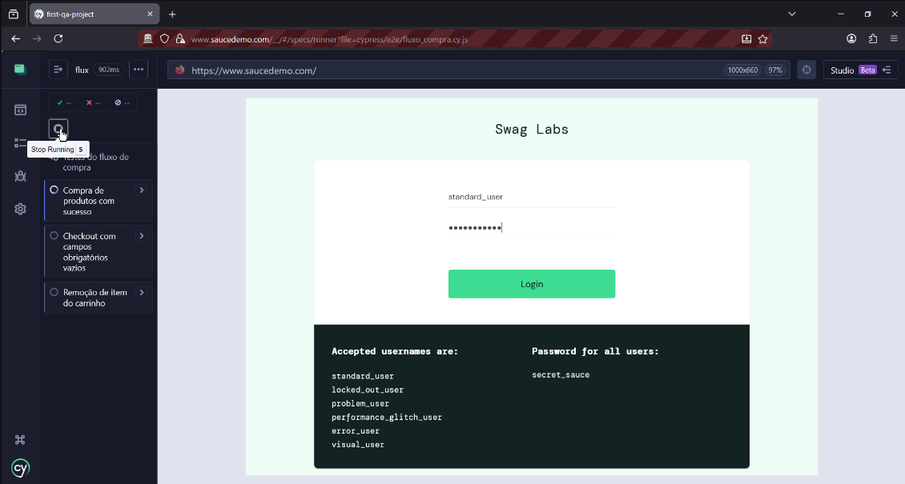

Formado em ADS e estudante de QA há alguns meses, procuro a primeira oportunidade de emprego como QA jr, estudo constantemente sobre Testes e Qualidade de Software. Não só pra entender o que é teoricamente mas também para entender como funciona a dinâmica de testes na prática.
Projeto em Destaque
Automação de Testes - E-commerce Sauce Demo
Neste projeto utilizei Cypress para validar o fluxo crítico de compra, desde o login até o checkout. Foquei em garantir a integridade dos seletores e relatórios de erro.

Minhas Skills
Tecnologias que utilizo nos meus estudos:
Linguagens e Web:
Ferramentas: